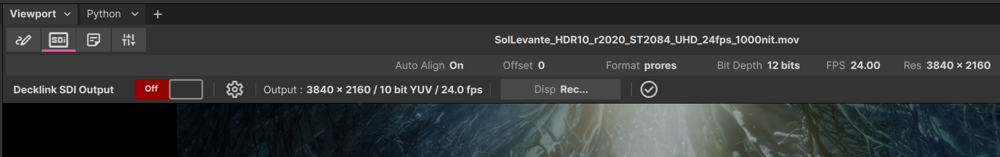

SDI: Video Output with Blackmagic Designs Decklink
xSTUDIOは、Blackmagic Design(BMD)のDeckLink SDI PCIカードを介した出力に対応しています。これにより、xSTUDIOでの作業中に、DeckLinkデバイスのSDI出力に接続されたリファレンスモニターやプロ仕様のプロジェクターハードウェアでMediaを確認できます。このシステムを動作させるには、当然ながら正常に機能するDeckLink SDIデバイスと、システムにインストールされた必要なドライバーが必要です。xSTUDIOで使用する前に、BMDのユーティリティソフトウェアを使用して、DeckLinkデバイスが正しく動作していることをテストおよび確認してください。
Note
xSTUDIO Decklinkプラグインは、デフォルトでは有効になっていません。ご自身でxSTUDIOをビルドする場合は、CMakePresets.jsonファイル内のBUILD_DECKLINK_PLUGIN変数の項目をONに変更し、xSTUDIOを再ビルドしてください。それ以外の場合は、Decklinkプラグインが有効化されたxSTUDIOのビルドを提供するよう、社内の技術チーム(Techチーム)に依頼してください。
xSTUDIOの起動時、ログ出力に以下のようなメッセージが表示されるか確認してください。これにより、xSTUDIOがDeckLinkカードを検出して初期化できたかどうかを検証できます。
[2026-03-23 11:43:38.676] [xstudio] [info] Decklink Card Initialised
Setting Up the SDI Output
DeckLinkカードがインストールされ、xSTUDIOがそれを正しく初期化できると、xSTUDIO Viewportの左上にSDIボタンが表示されます。これは表示・非表示を切り替えられる「Action Bar」の一部であるため、バーが表示されていることを確認してください。このボタンをクリックすると、SDIコントロールバーにアクセスできます。
{kind=link}

The SDI output control bar. Click the ‘SDI’ button to access this.
cog(歯車)アイコンをクリックすると、SDI出力設定ダイアログにアクセスできます。ここでは、SDIの出力フォーマット、解像度、およびフレームレートを選択できます。ドロップダウンリストの選択肢は、お使いのDeckLinkカードの機能と、インストールされているドライバーによって規定されます。古いカードや低スペックのSDIカードでは、選択できる出力フォーマットや解像度が限定される場合があります。なお、これらのオプションはSDI出力が停止しているときにのみ変更できます。
SDI出力の開始と停止は、SDIコントロールバーにあるOn/Offボタンを切り替えるだけです。バーの右端にあるステータスインジケーターで、SDI出力がアクティブであるかどうか、また出力信号の開始時に問題が発生しなかったかどうかを確認できます。

The SDI output settings dialog. Click the cog icon to access this.
出力ビデオのビット深度もここで設定できます。オプションとして8、10、または12ビットの出力が用意されています。お使いのDeckLinkカードの機能や、信号を表示するビデオハードウェアの仕様に合わせて、正しいビット深度を選択する必要があります。なお、ビット深度を高く設定しても、ホストマシンへの負荷という面で特別な「コスト(悪影響)」は発生しません。
Note
内部では、xSTUDIOはビデオフレームをチャンネルあたり16ビットのRGBフォーマットでレンダリングします。その後、SDI出力設定で指定された8、10、または12ビットへのビット深度削減を適用します。これにより、SDI出力のカラー解像度が完全に尊重され、「利用可能」なすべてのビットが出力信号で使用されます。
SDI出力には「Display」オプションがあります。ここでは、SDI経由で出力される前のビデオ信号にカラー変換を適用するために使用する、OpenColorIO(OCIO)の「Display」デバイスを設定します。この設定は、xSTUDIO GUIのmain viewport用にあるDisplayオプションからは独立しています。
Audio Output
SDIプラグインは、SDI経由でのオーディオ出力にも対応しています。オーディオの厳密なレビューを行う場合は、PCのオーディオ出力に依存するのではなく、可能であればSDI信号経路を使用してA/Vシステムを駆動することを強くお勧めします。SDIを使用することで、オーディオとビデオの同期が保証されるためです。ただし、SDIカード自体が画面に表示される前に約3フレームのビデオをバッファリングすることは考慮する必要があります。セットアップ内でSDI->HDMIコンバーターを使用している場合、ビデオ出力にさらに遅延が生じる可能性もあります。そのため、xSTUDIOのSDIプラグインには、オーディオ出力にわずかな遅延(ミリ秒単位)を適用するオプションが用意されています。これにより、画面上のビデオとの同期を微調整できます。対応するオーディオクリックトラックの視覚的なキュー(合図)が含まれるビデオサンプルは、目と耳で確認しながらこの調整を行うのに最適です。
High-Dynamic-Range (HDR) Output

The SDI HDR settings tab.
一部のプロフェッショナル向けビデオモニターやハイエンドのコンシューマー向けTVは、ハイダイナミックレンジ(HDR)ビデオに対応しています。お使いのDeckLinkカードと使用しているモニターがHDRに対応している場合は、HDR設定タブを介してSDI出力設定でこれを有効にできます。「HDR Mode」ドロップダウンで「SDR」を選択すると、HDRが無効になり、標準ダイナミックレンジの信号が出力されます。ここでの「PQ」オプションはPerceptual Quantizer(PQ) HDRカーブを指します。これは業界で最も広く使用されているHDRカーブであり、大半のHDR対応ディスプレイデバイスでサポートされています。
このインターフェースでは多くの低階層の設定を設定でき、これらによってモニター、TV、またはプロジェクターがビデオ信号に適用するHDRカーブの形状が決定されます。これらの数値の意味がわからない場合は、お使いの特定のモニターや出力したいHDR信号のタイプに合わせてこれらのパラメータを正しく設定する方法について、技術的なアドバイスを求めてください。これらに関するドキュメント化はこのマニュアルの範囲外です。ただし、これらの設定にはいくつかの標準的なプリセットが用意されており、多くの場合それだけで十分です。
HDRで視聴するには、SDI経由で出力される前のビデオ信号に正しいカラー変換が確実に適用されるよう、xSTUDIOで使用しているOpenColorIO(OCIO)設定内で適切な「Display」デバイス設定を行う必要もあります。これも同様に、正しく設定する方法がわからない場合は、技術的なアドバイスを求めるか、OCIOのドキュメントを参照してください。
Troubleshooting
SDI出力が正常に動作しない場合は、以下の項目を確認してください：
- DeckLinkカードがシステムに正しくインストールおよび設定されており、最新のドライバーがインストールされていることを確認してください。BMDのユーティリティソフトウェアを使用してカードをテストし、正しく動作していることを確認します。
- DeckLinkプラグインやSDI出力に関連するエラーメッセージがないか、xSTUDIOのログ出力を確認してください。何が原因で問題が発生しているかのヒントが得られます。
- SDI出力設定で、正しいSDI出力フォーマット、解像度、およびフレームレートが選択されていることを検証するか、これらの設定を変更して問題が解決するか試してください。モニターやプロジェクターによっては、特定のフォーマットや解像度しかサポートしていない場合があります。
- SDI->HDMIコンバーターを使用している場合は、それが正常に動作していること、および選択した出力フォーマットをサポートしていることを確認してください。
- HDRビデオを出力しようとしている場合は、モニターがHDRに対応していること、およびSDI出力設定でHDR設定が正しく設定されていることを確認してください。
- テスト中、xSTUDIOの開発者は、特定のモデルのDeckLinkカードにおいて、上記のチェックをすべて確認したにもかかわらず、カード自体は正常に動作しているように見えてモニターにビデオ出力が表示されないという問題を特定ケースで確認しています。このような場合、多くは単にxSTUDIOを再起動するだけで問題が解決します。